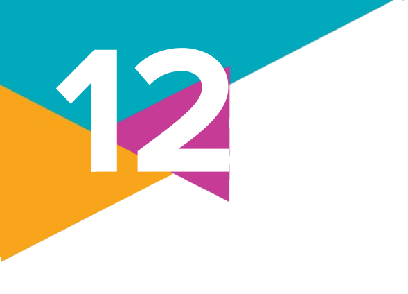

1.
Observe novamente o mapa “Mundo: índice de democracia por tipo de regime – 2023”, apresentado na abertura do capítulo, e faça o que se pede.
a) Exercitando sua visão crítica sobre essa proposta de classificação da democracia, até que ponto podemos compreendê-la de acordo com uma visão de mundo “universal” ou eurocêntrica/ocidental, assim como liberal e capitalista?
b) Faça uma pesquisa sobre dois países assinalados como autoritários, de continentes diferentes, procurando estabelecer variações envolvendo sua trajetória histórica e os desafios sociais, políticos e econômicos que enfrentaram ou que continuam enfrentando.
a) Exercitando sua visão crítica sobre essa proposta de classificação da democracia, até que ponto podemos compreendê-la de acordo com uma visão de mundo “universal” ou eurocêntrica/ocidental, assim como liberal e capitalista?
b) Faça uma pesquisa sobre dois países assinalados como autoritários, de continentes diferentes, procurando estabelecer variações envolvendo sua trajetória histórica e os desafios sociais, políticos e econômicos que enfrentaram ou que continuam enfrentando.
2.
(Enem – 2022)
A um príncipe, portanto, não é necessário ter de fato todas as qualidades, mas é indispensável parecer tê-las. Aliás, ousarei dizer que, se as tiver e utilizar sempre, serão danosas, enquanto, se parecer tê-las, serão úteis. Assim, deves parecer clemente, fiel, humano, íntegro, religioso – e sê-lo, mas com a condição de estares com o ânimo disposto a, quando necessário, não o seres, de modo que possas e saibas como tornar-te o contrário.
Segundo o autor, a conquista e a conservação do poder político exigem a:
a) flexibilidade moral do monarca.
b) retomada dos valores cristãos.
c) consulta periódica dos cidadãos.
d) adoção do imperativo categórico.
e) liberdade incondicional do estadista.
A um príncipe, portanto, não é necessário ter de fato todas as qualidades, mas é indispensável parecer tê-las. Aliás, ousarei dizer que, se as tiver e utilizar sempre, serão danosas, enquanto, se parecer tê-las, serão úteis. Assim, deves parecer clemente, fiel, humano, íntegro, religioso – e sê-lo, mas com a condição de estares com o ânimo disposto a, quando necessário, não o seres, de modo que possas e saibas como tornar-te o contrário.
MAQUIAVEL, N. O príncipe. São Paulo: Martins Fontes, 2004 (adaptado).
Segundo o autor, a conquista e a conservação do poder político exigem a:
a) flexibilidade moral do monarca.
b) retomada dos valores cristãos.
c) consulta periódica dos cidadãos.
d) adoção do imperativo categórico.
e) liberdade incondicional do estadista.
3.
Como as diferentes teorias do contrato social explicam o nascimento do Estado? Elabore um resumo apresentando as principais ideias, assim como as semelhanças e as diferenças entre as teorias contratualistas de Hobbes, Locke e Rousseau.
4.
Leia a notícia a seguir para responder às questões propostas.
O Legislativo e o Judiciário estão em atrito. O cardápio da crise é extenso. Entre outros, estão temas como marco temporal na demarcação de terras indígenas, aborto, drogas, lei eleitoral [...].
O problema central, no entanto, está numa disputa de poder, condimentada pelo desejo manifesto de parlamentares governistas e da oposição de impor limites ao Judiciário, principalmente ao Supremo Tribunal Federal, ao Superior Tribunal de Justiça e ao Tribunal Superior Eleitoral.
“O Supremo está legislando” – é a frase mais repetida nos plenários da Câmara e do Senado. Na maioria das vezes, ela serve para ocultar a negligência, lassidão, omissão ou indecisão deliberadas, que é uma forma política de decidir.
a) Explique qual seria a função de cada um dos poderes de acordo com a teoria da separação dos poderes de Montesquieu. Como essa teoria se relaciona com o tema da notícia?
b) De acordo com a notícia, por que haveria um atrito entre Legislativo e Judiciário no Brasil?
O Legislativo e o Judiciário estão em atrito. O cardápio da crise é extenso. Entre outros, estão temas como marco temporal na demarcação de terras indígenas, aborto, drogas, lei eleitoral [...].
O problema central, no entanto, está numa disputa de poder, condimentada pelo desejo manifesto de parlamentares governistas e da oposição de impor limites ao Judiciário, principalmente ao Supremo Tribunal Federal, ao Superior Tribunal de Justiça e ao Tribunal Superior Eleitoral.
“O Supremo está legislando” – é a frase mais repetida nos plenários da Câmara e do Senado. Na maioria das vezes, ela serve para ocultar a negligência, lassidão, omissão ou indecisão deliberadas, que é uma forma política de decidir.
CASADO, J. Disputa de poder provoca crise entre Congresso e Judiciário. Veja, [São Paulo], 21 set. 2023. Disponível em: https://veja.abril.com.br/coluna/jose-casado/disputa-de-poder-provoca-crise-entre-congresso-e-judiciario#google_vignette. Acesso em: 31 ago. 2024.
a) Explique qual seria a função de cada um dos poderes de acordo com a teoria da separação dos poderes de Montesquieu. Como essa teoria se relaciona com o tema da notícia?
b) De acordo com a notícia, por que haveria um atrito entre Legislativo e Judiciário no Brasil?
5.
Leia o texto a seguir.
Foi Max Weber (1864-1920), em “A política como vocação”, quem definiu a autoridade carismática como aquela que se baseia “na devoção a um ato de heroísmo excepcional, ou ao caráter exemplar de uma pessoa, o que lhe legitima a autoridade”. Mas não existe problema, teoricamente, em contar com um político carismático que tenha capacidade de energizar e capacitar a população. O problema surge quando tais personagens acabam por tomar o lugar do Estado e das demais instituições, tendo como recurso forte a capacidade de falar “diretamente” com a população, sem a intermediação de outros poderes da República.
Sobre o problema apontado no texto, você identifica que ele ocorre na política brasileira? Justifique sua resposta dando exemplos que ajudem a ilustrá-la.
Foi Max Weber (1864-1920), em “A política como vocação”, quem definiu a autoridade carismática como aquela que se baseia “na devoção a um ato de heroísmo excepcional, ou ao caráter exemplar de uma pessoa, o que lhe legitima a autoridade”. Mas não existe problema, teoricamente, em contar com um político carismático que tenha capacidade de energizar e capacitar a população. O problema surge quando tais personagens acabam por tomar o lugar do Estado e das demais instituições, tendo como recurso forte a capacidade de falar “diretamente” com a população, sem a intermediação de outros poderes da República.
SCHWARCZ, L. O beabá do populismo. Nexo Jornal, [s. l.], 9 set. 2009. Disponível em: https://www.nexojornal.com.br/o-beaba-do-populismo. Acesso em: 31 ago. 2024.
Sobre o problema apontado no texto, você identifica que ele ocorre na política brasileira? Justifique sua resposta dando exemplos que ajudem a ilustrá-la.